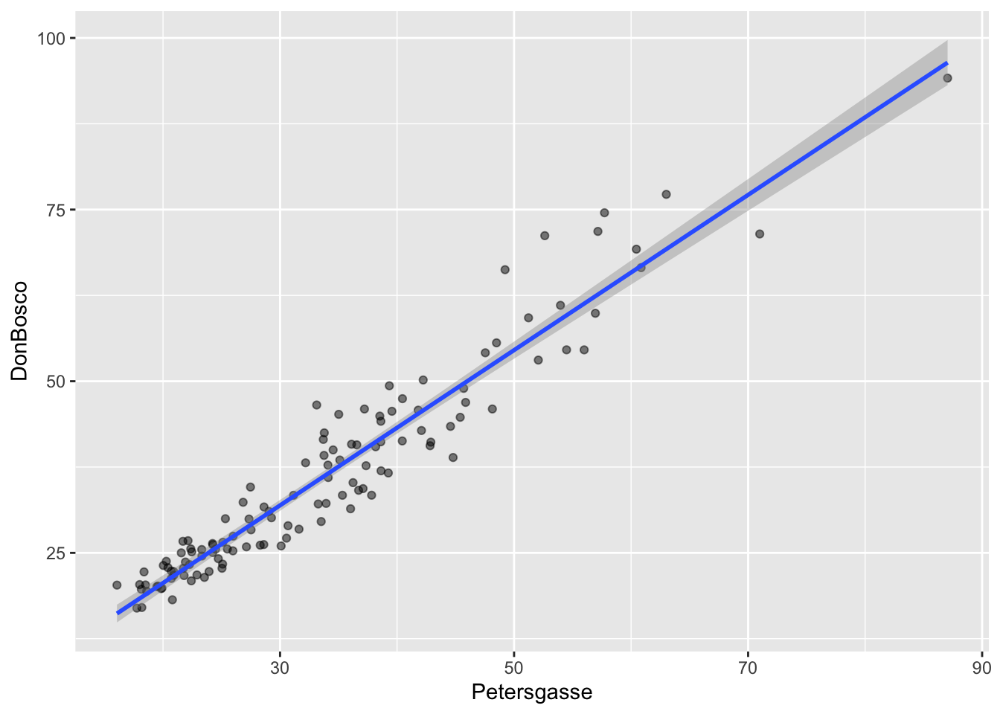

r = 0.25
N = 62
alpha = 0.05
z = atanh(r)
se_z = 1 / sqrt(N - 3)
(p = 2 * pnorm(-abs(z / se_z)))[1] 0.04977843Statistische Datenanalyse mit R
Clemens Brunner
26. November 2026
Durch Probieren mit verschiedenen Werten für \(N\) erhält man \(N = 62\) für \(p < 0.05\). Dies bedeutet, dass eine Korrelation von \(r = 0.25\) signifikant ist bei \(N = 62\) oder größer.
[1] 0.04977843Wiederum durch Probieren erhält man \(N = 1538\) (mindestens) damit \(p < 0.05\). Man sieht, dass selbst eine sehr kleine Korrelation ab einer gewissen Stichprobengröße signifikant wird.
[1] 0.04992702Genau deshalb sollte man Signifikanz nie mit Relevanz gleichsetzen: Eine Korrelation von \(r = 0.05\) erklärt lediglich \(R^2 = 0.0025\), also 0.25% der Varianz – und ist damit praktisch bedeutungslos, auch wenn sie bei \(N = 1538\) statistisch signifikant ist.
Pearson's product-moment correlation
data: x and y
t = 3.1632, df = 5, p-value = 0.02501
alternative hypothesis: true correlation is not equal to 0
99 percent confidence interval:
-0.1405326 0.9847508
sample estimates:
cor
0.8165732 Die Pearson-Korrelation beträgt 0.8166, der zugehörige \(p\)-Wert ist 0.02501. Bei einem Signifikanzniveau von \(\alpha = 0.01\) ist dies nicht signifikant (bei \(\alpha = 0.05\) hingegen schon). Passend dazu beinhaltet das 99%-Konfidenzintervall \((-0.1405, 0.9848)\) den Wert 0. Man sieht hier gut, wie breit das Konfidenzintervall bei einer sehr kleinen Stichprobe (\(N = 7\)) ausfällt – die Daten sind mit fast jeder positiven Korrelation verträglich.
mpg disp hp
mpg 1.0000000 -0.8475514 -0.7761684
disp -0.8475514 1.0000000 0.7909486
hp -0.7761684 0.7909486 1.0000000 mpg disp hp
mpg 1.0000000 -0.9088824 -0.8946646
disp -0.9088824 1.0000000 0.8510426
hp -0.8946646 0.8510426 1.0000000Alle drei Variablen hängen deutlich zusammen: Ein größerer Hubraum (disp) und mehr Leistung (hp) gehen jeweils mit einem höheren Verbrauch (also einem kleineren mpg-Wert) einher. Die Spearman-Korrelationen sind hier durchwegs betragsmäßig größer als die Pearson-Korrelationen, was auf einen monotonen, aber nicht ganz linearen Zusammenhang hindeutet – in den Streudiagrammen erkennt man tatsächlich einen leicht gekrümmten Verlauf.

Pearson's product-moment correlation
data: pm10[["Petersgasse"]] and pm10[["DonBosco"]]
t = 37.46, df = 121, p-value < 2.2e-16
alternative hypothesis: true correlation is not equal to 0
95 percent confidence interval:
0.9425599 0.9715014
sample estimates:
cor
0.9594887 cor
0.9206186 [1] 0.9594887Die beiden Messstationen korrelieren mit \(r = 0.96\) (\(p < 0.001\), 95%-Konfidenzintervall \([0.94, 0.97]\)) sehr hoch. Etwa 92% der Varianz der einen Station lassen sich durch die andere erklären – wenig überraschend, da beide Stationen in derselben Stadt dieselben saisonalen Schwankungen und Wetterlagen abbilden.
cor.test() entfernt fehlende Werte automatisch (es werden nur vollständige Paare verwendet), während cor() standardmäßig NA liefert und daher das Argument use benötigt.
[1] -0.2350529# A tibble: 3 × 2
species r
<fct> <dbl>
1 Adelie 0.391
2 Chinstrap 0.654
3 Gentoo 0.643Über alle Pinguine hinweg ergibt sich eine negative Korrelation von \(r = -0.24\), innerhalb jeder Spezies ist sie aber positiv (zwischen 0.39 und 0.65). Das ist genau das Simpsons Paradoxon, das wir in Einheit 8 bereits grafisch gesehen haben: Die drei Spezies bilden getrennte Punktwolken (Gentoo-Pinguine haben lange, aber flache Schnäbel), und diese Lage der Gruppen zueinander dominiert die Gesamtkorrelation.